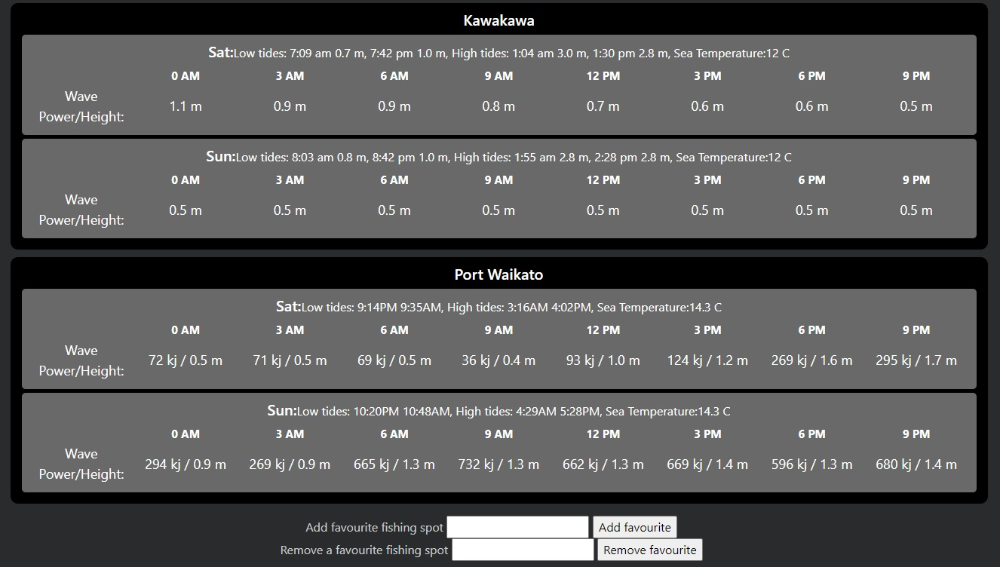
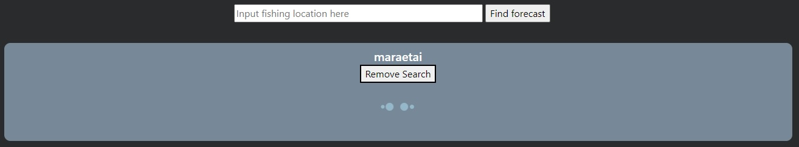
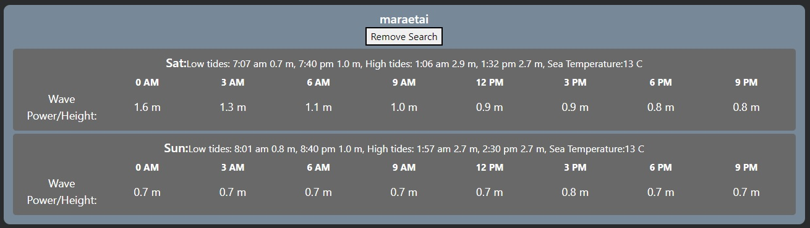
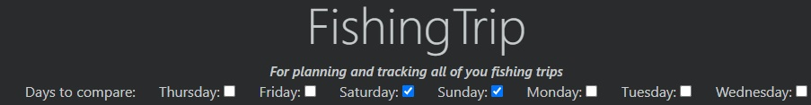
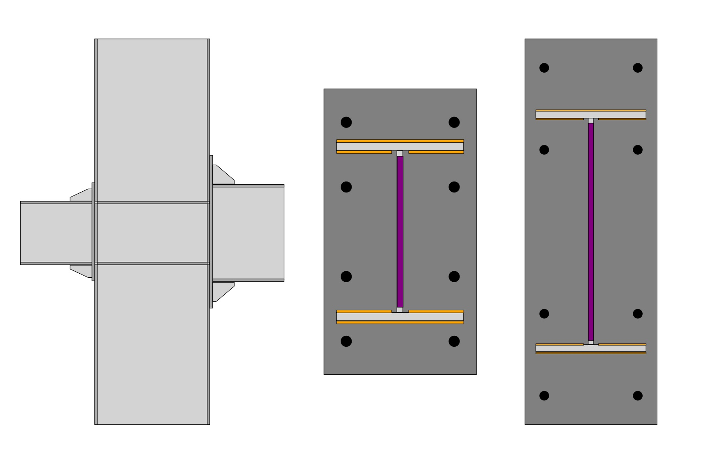
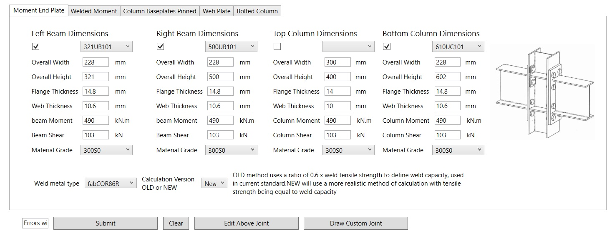
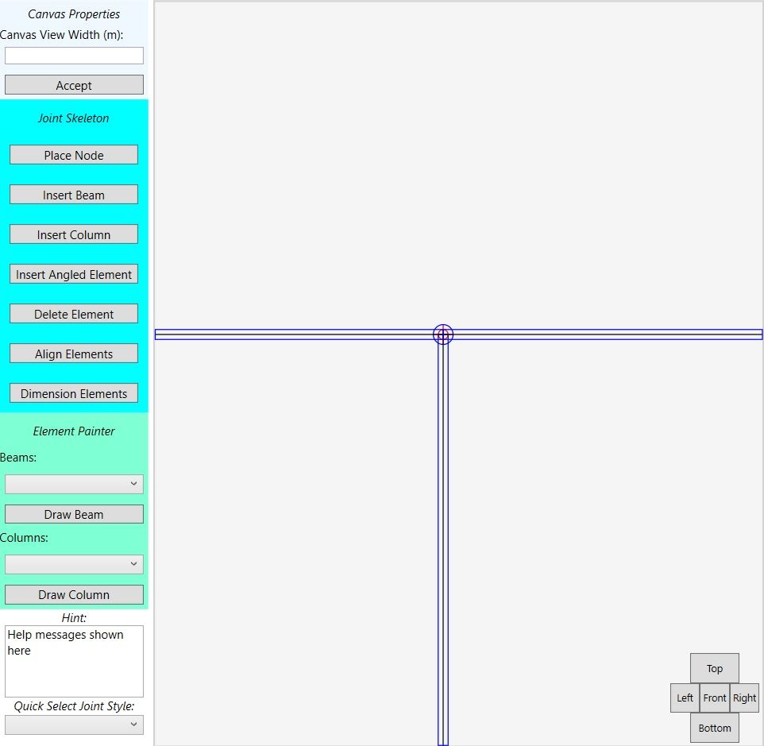
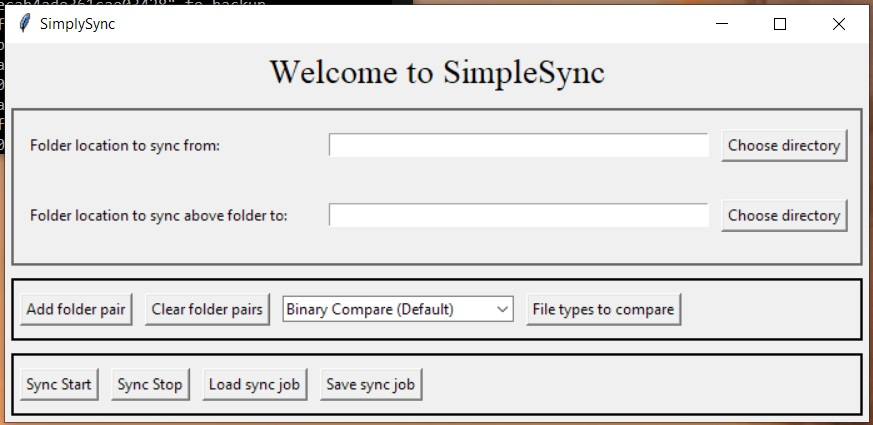

Hello, welcome to this small website which shows off my skills in the world of
Information Technology. Please have a look at my on going projects, where a brief explanation for each is given below.
I have used a range of languages in these projects; HTML, CSS, javascript, python and the dotnet framework. Databases used are microsoft SQL and MySQL.
FishingTrip
FishingTrip - The only website for fishing
Link to GitHub repository
Try it out through ngrok
This is an app that allows the user to make a quicker decision on where to go for fishing. It shows
the swell
forecast and tides for multiple fishing spots over multiple days, so it is easier to decided the
best place to go.
As a land based fisherman myself, it is important for safety to know the swell size and power so that you don't end up going out in dangerous conditions.




Currently this webapp has a login server which allows the user to save favourite fishing spots.
These spots forecast
conditions are updated constantly to ensure the latest information is always available. The user can
also search for
any fishing spots all over the world. This site gathers information from forecast sites using a
python webscraper,
while the interaction between client and server is through dotnet.
When a fishing spot is searched or added to a user's favourite list it is added to a task list
table. The server is setup to periodically check this table and if a task is found, the python
script is started to find the requested spot's forecast. The forecast div is also periodically
refreshed to see if the data has been found yet, and populates it when found. These above steps only
occurs if the spot's forecast is not already found in the database, otherwise the prexisting data is
used instead.
Further down the track a user can keep track of their successes when fishing, and the site will
automatically include the forecast conditions that led that good fishing day. It will then alert
when similar conditions are around the corner so hopefully the user can get out there with the big
fish once again.
The next features to be added is methods to organise fishing trips with a group easily, this will
pass on all
information such as conditions and weather to everyone invited and allows for alterations to the
plan by
everyone in the fishing group.
Previously I created a PHP website that handled the social aspects of this, with the users being
able to add friends,
submit general posts, fishing reports, and comment on friends posts, and can be found on my github.
However, for the
backend architecture it was decided to change to dotnet. However, these original ideas are to soon
be implemented
into the new dotnet webapp.
Welded Joint Designer
Accurate steel joint detailing, fast
Link to GitHub repository
While doing my Structural Engineering Masters, I had a small play with coding in C#, and the Welded Joint Designer program is the
result of
that. The sizing calculations for steel connection can be quite tricky, and I believed that a
calculator
designed to help the engineer with this step will make it quicker and more accurate. The idea behind
this
program is to take the forces and moments from a SAP style software, which runs analysis on a
building or
section of a building, and produces a set of expected forces and moments on the joints. Using these results, my program will then size all the elements of the steel joints to ensure that they
conform to the
latest structural standards.

There is both a simplified input method, where the engineer selects the style of joint from a drop
down list,
and the beginning of a more complex system where the engineer can 'draw' the joint to analyse. The
latter method
required interaction with a canvas object and connects beam and column lines with node points.
Further along in
the development, this information is then going to be analysed by the calculation portion of the
program to have
it's elements also sized.


SimpleSync
Link to GitHub repository
To help backup my projects I created a simple synchronisation program. This is made in python and
use Tkinter to
render a GUI. This program walks through both a working folder and a backup folder and checks to see
if any
differences in directorys exist and files. New files are copied over, and deleted files are renamed
and sent to
obsolete folders in the backup directory.
Most other files, except those which are selected to not be checked which I do not usually edit
(PDFs and
images),
are then compared via binary comparison. Originally this was done by MD5 hashing, and this method
still exists
in the
code, and will be reimplement as an option. The files which are found to have been altered are
copied across to
the backup, where the obsolete versions are moved to the obsolete folders.
Future ideas for this program will be automatic synchronisation at a certain interval, and a method
to add
multiple
sync/backup locations.

The next project - Community Gardens
See what's growing in your neighbourhood
Link to GitHub repository - Not created yet
Ever wondered how you neighbour always seems to grow bigger tomatoes than you? This is no longer a secret! Although in its beginning stages this webapp has the aim of letting you in on the world's gardening secrets. Not only this, but it will aid keeping track of all steps of your gardening, such as when plants were fertilised or havested. The idea behind this app is by using a vast amount of data from its users, predictions can be made about when to plant and harvest or protect against hash weather. Recommendations can be made as to other plants and vegetables a user can try based on the climate of their location and what other users are growing around them. Will then look at expanding this idea to recommend where these plants can be purchased locally. This website is in its infancy but it will allow for the opportunity to learn about using client location within an app. The aim is to use only dotnet architecture for the entire project.